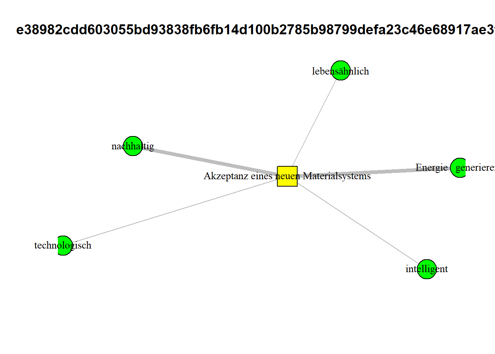

save_CAMs_as_pictures = TRUE # TRUE = save CAMs as .json, .png files
plot_deleted_CAMs = TRUEData preperation part II of basal attributes article
1 Notes
2 global variables
Define your global variables (can take some time to run):
3 create raw data files
# sets the directory of location of this script as the current directory
# setwd(dirname(rstudioapi::getSourceEditorContext()$path))
### load packages
# devtools::install_github('jdwilson4/multilayer_extraction')
require(pacman)
p_load('tidyverse', 'jsonlite', 'magrittr', 'xlsx',
'stargazer', 'psych', 'jtools', 'DT', 'ggstatsplot',
'lavaan',
'regsem', 'MplusAutomation', 'igraph', 'ggplot2', 'tidyLPA', 'MultilayerExtraction',
'Matrix', 'igraph', 'foreach', 'doParallel', 'parallel',
'R.matlab')
### load socio-demographic data
setwd("data demographic")
prolific <- read.csv(file = "prolific_export_65d4744b1373145896174eba.csv", header = TRUE)
setwd("../data final list basal attributes")
listBasalAttributes <- read.xlsx2(file = "final list basal attributes.xlsx", sheetIndex = 1)
listBasalAttributes$German.Translation[listBasalAttributes$German.Translation == "bio-inspiriert"] <- "bioinspiriert"
listBasalAttributes$German.Translation[listBasalAttributes$German.Translation == "Energie generierend"] <- "Energie generierend"
listBasalAttributes$German.Translation[listBasalAttributes$German.Translation == "Energie speichernd"] <- "Energie speichernd"
### list data files
setwd("../data")
folders <- list.files(pattern = "^study_result.*")
### create data files
### get CAM data
writeLines("", "CAMdata.txt") # create file
text_connection <- file("CAMdata.txt", "a") # open connection to append
### get pre CAM data
writeLines("", "preCAM.txt") # create file
text_connection_pre <- file("preCAM.txt", "a") # open connection to append
### get post CAM data
writeLines("", "postCAM.txt") # create file
text_connection_post <- file("postCAM.txt", "a") # open connection to append
for(i in 1:length(folders)){
setwd(folders[i])
if(length(dir()) == 3){
# print(i)
### CAM data
setwd(dir()[2])
tmp <- jsonlite::fromJSON(txt = "data.txt")
writeLines(jsonlite::toJSON(x = tmp), text_connection)
setwd("..")
### pre CAM data
setwd(dir()[1])
tmp <- jsonlite::fromJSON(txt = "data.txt")
writeLines(jsonlite::toJSON(x = tmp), text_connection_pre)
setwd("..")
### post CAM data
setwd(dir()[3])
tmp <- jsonlite::fromJSON(txt = "data.txt")
writeLines(jsonlite::toJSON(x = tmp), text_connection_post)
setwd("..")
}
setwd("..")
}
close(text_connection) # close connection CAM
close(text_connection_pre) # close connection
close(text_connection_post) # close connection
### move files to output folder
# copy files (not overwritten)
tmp_file_from <- getwd()
setwd("../outputs/01_dataPreperation")
file.copy(from = paste0(tmp_file_from, "/CAMdata.txt"), to = paste0(getwd(), "/CAMdata.txt"))[1] FALSEfile.copy(from = paste0(tmp_file_from, "/preCAM.txt"), to = paste0(getwd(), "/preCAM.txt"))[1] FALSEfile.copy(from = paste0(tmp_file_from, "/postCAM.txt"), to = paste0(getwd(), "/postCAM.txt"))[1] FALSE### remove files
file.remove(paste0(tmp_file_from, "/CAMdata.txt"))[1] TRUEfile.remove(paste0(tmp_file_from, "/preCAM.txt"))[1] TRUEfile.remove(paste0(tmp_file_from, "/postCAM.txt"))[1] TRUE### load functions
setwd("../../functions")
for(i in 1:length(dir())){
# print(dir()[i])
source(dir()[i], encoding = "utf-8")
}
setwd("../functions_CAMapp")
for(i in 1:length(dir())){
# print(dir()[i])
source(dir()[i], encoding = "utf-8")
}
rm(i)
### summary function
data_summary <- function(data, varname, groupnames){
require(plyr)
summary_func <- function(x, col){
c(mean = mean(x[[col]], na.rm=TRUE),
se = sd(x[[col]], na.rm=TRUE) / sqrt(length(x[[col]])))
}
data_sum<-ddply(data, groupnames, .fun=summary_func,
varname)
data_sum <- plyr::rename(data_sum, c("mean" = varname))
return(data_sum)
}4 set up data.frame questionnaires
setwd("outputs/01_dataPreperation")
# > pre study
suppressMessages(
read_file('preCAM.txt') %>%
# ... split it into lines ...
str_split('\n') %>% first() %>%
# ... filter empty rows ...
discard(function(x)
x == '') %>%
discard(function(x)
x == '\r') %>%
# ... parse JSON into a data.frame
map_dfr(fromJSON, flatten = TRUE)
) -> dat_preCAM
# > post CAM
read_file('postCAM.txt') %>%
# ... split it into lines ...
str_split('\n') %>% first() %>%
# ... filter empty rows ...
discard(function(x)
x == '') %>%
discard(function(x)
x == '\r') -> tmp_postCAM
tmp_out <- list()
for (i in 1:length(tmp_postCAM)) {
tmp_out[[i]] <- fromJSON(tmp_postCAM[i])
tmp_out[[i]]$"21" <- NULL # causes error
}
dat_postCAM <- dplyr::bind_rows(tmp_out)
rm(tmp_postCAM)
rm(tmp_out)
### create counter variable for both data sets
# > pre study
dat_preCAM$ID <- NA
tmp_IDcounter <- 0
for (i in 1:nrow(dat_preCAM)) {
if (!is.na(dat_preCAM$sender[i]) &&
dat_preCAM$sender[i] == "Greetings") {
# tmp <- dat_preCAM$prolific_pid[i]
tmp_IDcounter = tmp_IDcounter + 1
}
dat_preCAM$ID[i] <- tmp_IDcounter
}
# > post CAM
dat_postCAM$ID <- NA
tmp_IDcounter <- 0
for (i in 1:nrow(dat_postCAM)) {
if (!is.na(dat_postCAM$sender[i]) &&
dat_postCAM$sender[i] == "CAMfeedbackGeneral") {
# tmp <- dat_postCAM$prolific_pid[i]
tmp_IDcounter = tmp_IDcounter + 1
}
dat_postCAM$ID[i] <- tmp_IDcounter
}
### keep only complete data sets
# > pre study
# sort(table(dat_preCAM$ID))
sum(table(dat_preCAM$ID) != max(table(dat_preCAM$ID)))[1] 0sum(table(dat_preCAM$ID) == max(table(dat_preCAM$ID)))[1] 193dat_preCAM <-
dat_preCAM[dat_preCAM$ID %in% names(table(dat_preCAM$ID))[table(dat_preCAM$ID) == max(table(dat_preCAM$ID))], ]
# > post CAM
# sort(table(dat_postCAM$ID))
sum(table(dat_postCAM$ID) != max(table(dat_postCAM$ID)))[1] 1sum(table(dat_postCAM$ID) == max(table(dat_postCAM$ID)))[1] 192dat_postCAM <-
dat_postCAM[dat_postCAM$ID %in% names(table(dat_postCAM$ID))[table(dat_postCAM$ID) == max(table(dat_postCAM$ID))], ]
### json (from JATOS) to 2D data.frame
# > pre study
# add paradata
tmp_notNumeric <-
str_subset(string = colnames(dat_preCAM), pattern = "^meta|^R")
tmp_notNumeric <-
str_subset(string = tmp_notNumeric,
pattern = "labjs|location",
negate = TRUE)
### get survey
vec_ques <- c("PROLIFIC_PID",
"dummy_informedconsent",
"commCheck",
tmp_notNumeric)
vec_notNumeric = c("PROLIFIC_PID", tmp_notNumeric)
questionnaire_preCAM <- questionnairetype(
dataset = dat_preCAM,
listvars = vec_ques,
notNumeric = vec_notNumeric,
verbose = FALSE
)
dim(questionnaire_preCAM)[1] 193 17# > post CAM
tmp_numeric <-
str_subset(string = colnames(dat_postCAM), pattern = "^nfc")
vec_ques <- c(
"PROLIFIC_PID",
"commCheck",
"feedCAM_repres",
"feedCAM_technicalprobs",
"feedCAM_technicalprobsText",
"feedCAM_already",
"feedCAM_alreadyText",
"openQuestion_MaterialSystem",
"openQuestion_Ethic",
"openQuestion_missedPositive",
"openQuestion_missedNegative",
"outcome_research",
"outcome_prohibition",
"outcome_buy",
"outcome_buy_text",
"education",
"experienceMS",
tmp_numeric,
"feedback_critic"
)
vec_notNumeric = c(
"PROLIFIC_PID",
"feedCAM_technicalprobsText",
"feedCAM_alreadyText",
"openQuestion_MaterialSystem",
"openQuestion_Ethic",
"openQuestion_missedPositive",
"openQuestion_missedNegative",
"outcome_research",
"outcome_prohibition",
"outcome_buy",
"outcome_buy_text",
"education",
"experienceMS",
"feedback_critic"
)
questionnaire_postCAM <- questionnairetype(
dataset = dat_postCAM,
listvars = vec_ques,
notNumeric = vec_notNumeric,
verbose = FALSE
)
questionnaire_postCAM$feedback_critic[questionnaire_postCAM$feedback_critic == ""] <-
NA
dim(questionnaire_postCAM)[1] 192 23questionnaire_postCAM$multipleEthic <- NA
tmp_multipleEthic <-
cbind(dat_postCAM$ID, dat_postCAM$multipleEthic)
questionnaire_postCAM$multiplePositive <- NA
tmp_multiplePositive <-
cbind(dat_postCAM$ID, dat_postCAM$multiplePositive)
questionnaire_postCAM$multipleNegative <- NA
tmp_multipleNegative <-
cbind(dat_postCAM$ID, dat_postCAM$multipleNegative)
for (i in questionnaire_postCAM$ID) {
# add multipleEthic
tmp <- tmp_multipleEthic[tmp_multipleEthic[, 1] == i,]
if (length(unlist(tmp[, 2])) == 3) {
questionnaire_postCAM$multipleEthic[questionnaire_postCAM$ID == i] <-
paste0(unlist(tmp[, 2]), collapse = " \\ ")
}
# add multiplePositive
tmp <- tmp_multiplePositive[tmp_multiplePositive[, 1] == i,]
if (length(unlist(tmp[, 2])) == 3) {
questionnaire_postCAM$multiplePositive[questionnaire_postCAM$ID == i] <-
paste0(unlist(tmp[, 2]), collapse = " \\ ")
}
# add multipleNegative
tmp <- tmp_multipleNegative[tmp_multipleNegative[, 1] == i,]
if (length(unlist(tmp[, 2])) == 3) {
questionnaire_postCAM$multipleNegative[questionnaire_postCAM$ID == i] <-
paste0(unlist(tmp[, 2]), collapse = " \\ ")
}
}
dim(questionnaire_postCAM)[1] 192 26### merge all data sets
# remove one missing
questionnaire_preCAM <-
questionnaire_preCAM[questionnaire_preCAM$PROLIFIC_PID %in% questionnaire_postCAM$PROLIFIC_PID,]
questionnaire_postCAM$ID <- NULL
questionnaire <-
left_join(questionnaire_preCAM, questionnaire_postCAM, by = "PROLIFIC_PID")
## all missing answers to NA
questionnaire[questionnaire == ""] <- NA
## all feedback smaller than 3 characters to NA
questionnaire$feedback_critic[nchar(questionnaire$feedback_critic) <= 2] <-
NA
dim(questionnaire)[1] 192 41### save files
## save as .xlsx file
xlsx::write.xlsx2(x = questionnaire, file = "questionnaire.xlsx")
## save as R object
saveRDS(questionnaire, file = "questionnaire.rds")5 get reaction times for single components
Plot time taken (in minutes) by participants for single components of study:
dat_duration <-
data.frame(
duration = NA,
sender = NA,
ID = NA,
PROLIFIC_PID = NA
)
for (i in 1:length(unique(dat_preCAM$ID))) {
tmp_PID <-
dat_preCAM$PROLIFIC_PID[dat_preCAM$ID == unique(dat_preCAM$ID)[i] &
!is.na(dat_preCAM$PROLIFIC_PID)]
# pre CAM
tmp_preCAM <-
data.frame(duration = dat_preCAM$duration[dat_preCAM$ID == unique(dat_preCAM$ID)[i]] / 1000,
sender = dat_preCAM$sender[dat_preCAM$ID == unique(dat_preCAM$ID)[i]])
tmp_preCAM <- tmp_preCAM[!is.na(tmp_preCAM$sender), ]
# post CAM
tmp_postCAM <-
data.frame(duration = dat_postCAM$duration[dat_postCAM$ID == unique(dat_postCAM$ID)[i]] / 1000,
sender = dat_postCAM$sender[dat_postCAM$ID == unique(dat_postCAM$ID)[i]])
tmp_postCAM <- tmp_postCAM[!is.na(tmp_postCAM$sender), ]
tmp <- rbind(tmp_preCAM, tmp_postCAM)
if (all(is.na(dat_duration))) {
dat_duration <- data.frame(
duration = tmp$duration,
sender = tmp$sender,
ID = rep(i, times = nrow(tmp)),
PROLIFIC_PID = rep(tmp_PID, times = nrow(tmp))
)
} else{
dat_duration <-
rbind(
dat_duration,
data.frame(
duration = tmp$duration,
sender = tmp$sender,
ID = rep(i, times =
nrow(tmp)),
PROLIFIC_PID = rep(tmp_PID, times =
nrow(tmp))
)
)
}
}
## remove empty sender
dat_duration <- dat_duration[!is.na(dat_duration$sender),]
dat_duration <- dat_duration[!is.na(dat_duration$duration),]
dat_duration$sender[dat_duration$sender == "done"] <-
"CAM instructions"
## save as .xlsx
# write.xlsx2(x = dat_duration, file = "outputs/para_duration_singleComponents.xlsx")
#### plot
dat_duration$ID <- factor(dat_duration$ID)
p <- dat_duration %>%
ggplot(aes(x = sender, y = duration, color = PROLIFIC_PID)) +
geom_point() +
geom_jitter(width = 0.15) +
theme(axis.text.x = element_text(angle = 90)) + theme(legend.position =
"none")
p
## save ggplot as PDF
ggsave(filename = "outputs/01_dataPreperation/durations_components.pdf", p)
# Calculate the mean duration in seconds for each sender and sort by mean duration
tmp <- dat_duration %>%
group_by(sender) %>%
summarise(N = n(),
mean_duration = mean(duration, na.rm = TRUE)) %>%
arrange(desc(mean_duration))
DT::datatable(tmp, options = list(pageLength = 5))6 add socio-demographic data
### add prolific data
prolific <- prolific[prolific$Participant.id %in% questionnaire$PROLIFIC_PID,]
prolific <- prolific %>%
arrange(sapply(Participant.id, function(y) which(y == questionnaire$PROLIFIC_PID)))
if(all(prolific$Participant.id == questionnaire$PROLIFIC_PID)){
print("prolific data sucessfully added")
questionnaire$socio_age <- prolific$Age
questionnaire$socio_sex <- prolific$Sex
questionnaire$socio_ethnicity <- prolific$Ethnicity.simplified
questionnaire$socio_student <- prolific$Student.status
questionnaire$socio_employment <- prolific$Employment.status
questionnaire$total_min_prolific <- prolific$Time.taken / 60
## all time outs to NA
# questionnaire$total_min_prolific[questionnaire$total_min_prolific > 1000] <- NA
## all expired data to NA
questionnaire[questionnaire == "DATA_EXPIRED"] <- NA
questionnaire$socio_age <- as.numeric(questionnaire$socio_age)
}[1] "prolific data sucessfully added"## all missing answers to NA
# questionnaire[questionnaire == ""] <- NA
## all feedback smaller than 3 characters to NA
# questionnaire$feedback_critic[nchar(questionnaire$feedback_critic) <= 2] <- NA6.1 Describe sample
table(questionnaire$socio_sex)
Female Male Prefer not to say
63 127 2 round(x = table(questionnaire$socio_sex) / nrow(questionnaire) * 100, digits = 2)
Female Male Prefer not to say
32.81 66.15 1.04 psych::describe(x = questionnaire[, c("socio_age", "total_min_prolific")]) vars n mean sd median trimmed mad min max range
socio_age 1 192 30.49 9.12 28.00 29.44 8.90 18.00 71.00 53.00
total_min_prolific 2 192 34.91 13.25 32.48 33.37 10.72 12.17 91.88 79.72
skew kurtosis se
socio_age 1.19 1.91 0.66
total_min_prolific 1.38 2.80 0.967 set up CAM data
Load CAM data
setwd("outputs/01_dataPreperation")
suppressMessages(read_file("CAMdata.txt") %>%
# ... split it into lines ...
str_split('\n') %>% first() %>%
discard(function(x) x == '') %>%
discard(function(x) x == '\r') %>%
# ... filter empty rows ...ds
discard(function(x) x == '')) -> dat_CAM_pre
raw_CAM <- list()
for(i in 1:length(dat_CAM_pre)){
raw_CAM[[i]] <- jsonlite::fromJSON(txt = dat_CAM_pre[[i]])
# raw_CAM[[i]]$connectors$isBidirectional <- TRUE
}Create CAM files, draw CAMs and compute network indicators
### create CAM single files (nodes, connectors, merged)
CAMfiles <- create_CAMfiles(datCAM = raw_CAM, reDeleted = TRUE)Nodes and connectors, which were deleted by participants were removed.
# deleted nodes: 0
# deleted connectors: 434nrow(CAMfiles[[1]])[1] 6369nrow(CAMfiles[[2]])[1] 7880nrow(CAMfiles[[3]])[1] 15760# remove testing data sets
CAMfiles[[1]] <- CAMfiles[[1]][CAMfiles[[1]]$participantCAM %in% questionnaire$PROLIFIC_PID,]
CAMfiles[[2]] <- CAMfiles[[2]][CAMfiles[[2]]$participantCAM %in% questionnaire$PROLIFIC_PID,]
CAMfiles[[3]] <- CAMfiles[[3]][CAMfiles[[3]]$participantCAM.x %in% questionnaire$PROLIFIC_PID,]
### draw CAMs
CAMdrawn <- draw_CAM(dat_merged = CAMfiles[[3]],
dat_nodes = CAMfiles[[1]],ids_CAMs = "all",
plot_CAM = FALSE,
useCoordinates = TRUE,
relvertexsize = 3,
reledgesize = 1)processing 192 CAMs... Warning: `graph.data.frame()` was deprecated in igraph 2.0.0.
ℹ Please use `graph_from_data_frame()` instead.[1] "== participantCAM in drawnCAM"i <- 2
edge.attributes(graph = CAMdrawn[[i]])$width
[1] 5 1 1 1 1 1 3 1 1 1 1 1 1 1 1 1 1 1 1 1 5 1 1 1 1 5 1 1 1 1 1 1 1 1 1 1 1 1
[39] 1
$weight
[1] 3 1 1 1 1 1 2 1 1 1 1 1 1 1 1 1 1 1 1 1 3 1 1 1 1 3 1 1 1 1 1 1 1 1 1 1 1 1
[39] 1
$color
[1] "grey" "grey" "grey" "grey" "grey" "grey" "grey" "grey" "grey" "grey"
[11] "grey" "grey" "grey" "grey" "grey" "grey" "grey" "grey" "grey" "grey"
[21] "grey" "grey" "grey" "grey" "grey" "grey" "grey" "grey" "grey" "grey"
[31] "grey" "grey" "grey" "grey" "grey" "grey" "grey" "grey" "grey"
$lty
[1] 1 1 1 1 1 2 2 1 1 1 1 1 1 1 1 1 1 1 1 1 1 1 1 1 1 1 1 1 1 1 1 1 1 1 1 1 1 1
[39] 1igraph::is_directed(graph = CAMdrawn[[i]])[1] FALSEplot(CAMdrawn[[i]], edge.arrow.size = .2,
layout=layout_nicely, vertex.frame.color="black", asp = .5, margin = -0.1,
vertex.size = 10, vertex.label.cex = .9)
### network indicators
tmp_microIndicator <- V(CAMdrawn[[1]])$label
networkIndicators <- compute_indicatorsCAM(drawn_CAM = CAMdrawn,
micro_degree = tmp_microIndicator,
micro_valence = tmp_microIndicator,
micro_centr_clo = tmp_microIndicator,
micro_transitivity = NULL, # not informative
largestClique = FALSE)Warning: `graph.density()` was deprecated in igraph 2.0.0.
ℹ Please use `edge_density()` instead.Warning: The `types1` argument of `assortativity()` is deprecated as of igraph 1.6.0.
ℹ Please use the `values` argument instead.Warning: `assortativity.degree()` was deprecated in igraph 2.0.0.
ℹ Please use `assortativity_degree()` instead.### wordlist
CAMwordlist <- create_wordlist(
dat_nodes = CAMfiles[[1]],
dat_merged = CAMfiles[[3]],
useSummarized = TRUE,
order = "frequency",
splitByValence = FALSE,
comments = TRUE,
raterSubsetWords = NULL,
rater = FALSE
)[1] "create_wordlist - use raw words"
[1] 0
[1] 6336
[1] "temporarily suffixes are added, because not all words have been summarized"
processing 192 CAMs...
[1] "== participantCAM in drawnCAM"DT::datatable(CAMwordlist, options = list(pageLength = 5))7.1 plot CAMs using igraph package
Just plot first 10 CAMs for an impression
for(i in 1:10){ # length(CAMdrawn)
plot(CAMdrawn[[i]], edge.arrow.size = .7,
layout=layout_nicely, vertex.frame.color="black", asp = .5, margin = -0.1,
vertex.size = 10, vertex.label.cex = .9)
}


7.2 save CAMs as .json files, and as .png (igraph)
if(save_CAMs_as_pictures) {
raw_CAM_translated <- raw_CAM
setwd("outputs/01_dataPreperation")
setwd("savedCAMs")
setwd("png")
### remove all files if there are any
if (length(list.files()) >= 1) {
file.remove(list.files())
cat('\n!
all former .png files have been deleted')
}
### if no participant ID was provided replace by randomly generated CAM ID
if (all(CAMfiles[[3]]$participantCAM.x == "noID")) {
CAMfiles[[3]]$participantCAM.x <- CAMfiles[[3]]$CAM.x
}
### save as .json files, and as .png (igraph)
ids_CAMs <- unique(CAMfiles[[3]]$participantCAM.x)
length(ids_CAMs)
for (i in 1:length(ids_CAMs)) {
save_graphic(filename = paste0("CAM", ids_CAMs[i])) # paste0(ids_CAMs[i]))
CAM_igraph <- CAMdrawn[[c(1:length(CAMdrawn))[names(CAMdrawn) == paste0(unique(CAMfiles[[3]]$participantCAM.x)[i])]]]
### translate:
V(CAM_igraph)$label[match(listBasalAttributes$German.Translation,
V(CAM_igraph)$label)] <- listBasalAttributes$Basal.Attribute
V(CAM_igraph)$label[V(CAM_igraph)$label == "Akzeptanz eines neuen Materialsystems"] <-
"Acceptance of a new material system"
plot(
CAM_igraph,
edge.arrow.size = .7,
layout = layout_nicely,
vertex.frame.color = "black",
asp = .5,
margin = -0.1,
vertex.size = 10,
vertex.label.cex = .9
)
dev.off()
}
setwd("../json")
### remove all files if there are any
if (length(list.files()) >= 1) {
file.remove(list.files())
cat('\n!
all former .json files have been deleted')
}
for (i in 1:length(raw_CAM_translated)) {
if (!is_empty(raw_CAM_translated[[i]]$nodes)) {
if (nrow(raw_CAM_translated[[i]]$nodes) > 5) {
### translate:
raw_CAM_translated[[i]]$nodes$text[match(listBasalAttributes$German.Translation,
raw_CAM_translated[[i]]$nodes$text)] <-
listBasalAttributes$Basal.Attribute
raw_CAM_translated[[i]]$nodes$text[raw_CAM_translated[[i]]$nodes$text == "Akzeptanz eines neuen Materialsystems"] <-
"Acceptance of a new material system"
if (raw_CAM_translated[[i]]$creator %in% questionnaire$PROLIFIC_PID) {
# only if not deleted previously
write(
toJSON(raw_CAM_translated[[i]], encoding = "UTF-8"),
paste0(raw_CAM_translated[[i]]$creator, ".json")
)
}
}
}
}
}
!
all former .png files have been deleted
!
all former .json files have been deleted7.3 delete CAMs with star topology
### 10% of participants have connected all basal attributes to the central one
barplot(
table(
networkIndicators$degreetot_micro_AkzeptanzeinesneuenMaterialsystems
) / nrow(networkIndicators)
)
### delete extreme CAMs without any inter-connections between basal attributes
vec_delete <- c()
h = 1
for (i in 1:nrow(networkIndicators)) {
if (networkIndicators$degreetot_micro_AkzeptanzeinesneuenMaterialsystems[i] >= 30) {
# & networkIndicators$transitivity_macro[i] == 0
vec_delete[h] <- names(CAMdrawn)[i]
h = h + 1
if(plot_deleted_CAMs){
plot(
CAMdrawn[[i]],
edge.arrow.size = .7,
layout = layout_nicely,
vertex.frame.color = "black",
asp = .5,
margin = -0.1,
vertex.size = 10,
vertex.label.cex = .9,
main = networkIndicators$participantCAM[i]
)
}
}
}


if (length(vec_delete) > 1) {
cat(length(vec_delete), "CAMs are removed from the data set, which results in",
round(x = (1-(length(CAMdrawn) - length(vec_delete)) / length(CAMdrawn)) * 100, digits = 2),
"% loss of data")
## remove deleted CAMs from
#> CAM files
CAMfiles_clean <- CAMfiles
CAMfiles_clean[[1]] <-
CAMfiles_clean[[1]][!CAMfiles_clean[[1]]$participantCAM %in% vec_delete,]
CAMfiles_clean[[2]] <-
CAMfiles_clean[[2]][!CAMfiles_clean[[2]]$participantCAM %in% vec_delete,]
CAMfiles_clean[[3]] <-
CAMfiles_clean[[3]][!CAMfiles_clean[[3]]$participantCAM.x %in% vec_delete,]
#> drawn CAMs
CAMdrawn_clean <- CAMdrawn[!names(CAMdrawn) %in% vec_delete]
#> network indicators
networkIndicators_clean <-
networkIndicators[!networkIndicators$participantCAM %in% vec_delete,]
### 10% of participants have connected all basal attributes to the central one
barplot(
table(
networkIndicators_clean$degreetot_micro_AkzeptanzeinesneuenMaterialsystems
) / nrow(networkIndicators_clean)
)
#> re-create wordlist
CAMwordlist_clean <- create_wordlist(
dat_nodes = CAMfiles_clean[[1]],
dat_merged = CAMfiles_clean[[3]],
useSummarized = TRUE,
order = "frequency",
splitByValence = FALSE,
comments = TRUE,
raterSubsetWords = NULL,
rater = FALSE
)
#> questionnaire
questionnaire_clean <-
questionnaire[!questionnaire$PROLIFIC_PID %in% vec_delete,]
}23 CAMs are removed from the data set, which results in 11.98 % loss of data
[1] "create_wordlist - use raw words"
[1] 0
[1] 5577
[1] "temporarily suffixes are added, because not all words have been summarized"
processing 169 CAMs...
[1] "== participantCAM in drawnCAM"7.4 aggregate CAMs
this is needed for MultilayerExtraction.
sel_ids <- unique(CAMfiles_clean[[1]]$participantCAM)
CAMaggregated_clean <-
aggregate_CAMs(dat_merged = CAMfiles_clean[[3]],
dat_nodes = CAMfiles_clean[[1]],
ids_CAMs = sel_ids)[1] "aggregate_CAMs: using participant CAM ids"
processing 169 CAMs...
[1] "== participantCAM in drawnCAM"CAMaggregated_clean[[1]][1:5, 1:5] Akzeptanz eines neuen Materialsystems
Akzeptanz eines neuen Materialsystems 169
Energie speichernd 27
wartungsintensiv 63
aktive Formänderung durch Umwelteinwirkung 44
energieeffizient 45
Energie speichernd
Akzeptanz eines neuen Materialsystems 27
Energie speichernd 169
wartungsintensiv 1
aktive Formänderung durch Umwelteinwirkung 1
energieeffizient 59
wartungsintensiv
Akzeptanz eines neuen Materialsystems 63
Energie speichernd 1
wartungsintensiv 169
aktive Formänderung durch Umwelteinwirkung 4
energieeffizient 4
aktive Formänderung durch Umwelteinwirkung
Akzeptanz eines neuen Materialsystems 44
Energie speichernd 1
wartungsintensiv 4
aktive Formänderung durch Umwelteinwirkung 169
energieeffizient 1
energieeffizient
Akzeptanz eines neuen Materialsystems 45
Energie speichernd 59
wartungsintensiv 4
aktive Formänderung durch Umwelteinwirkung 1
energieeffizient 169## check for symmetry
all(colSums(CAMaggregated_clean[[5]][[1]]) == rowSums(CAMaggregated_clean[[5]][[1]]))[1] TRUE## test first concept of first CAM
colnames(CAMaggregated_clean[[5]][[1]])[1][1] "Akzeptanz eines neuen Materialsystems"colnames(CAMaggregated_clean[[5]][[1]])[CAMaggregated_clean[[5]][[1]][1, ] >= 1][1] "nachhaltig" "intelligent" "lebensähnlich"
[4] "Energie generierend" "technologisch" rownames(CAMaggregated_clean[[5]][[1]])[CAMaggregated_clean[[5]][[1]][1, ] >= 1][1] "nachhaltig" "intelligent" "lebensähnlich"
[4] "Energie generierend" "technologisch" plot(
make_ego_graph(CAMdrawn_clean[[1]], order = 1, 1)[[1]],
edge.arrow.size = .7,
layout = layout_nicely,
vertex.frame.color = "black",
asp = .5,
margin = -0.1,
vertex.size = 10,
vertex.label.cex = .9,
main = networkIndicators$CAM_ID[i]
)
## adjacency matrix (Aij = 1 when nodes i and j are connected and Aij = 0 otherwise)
CAMaggregated_clean_onlyOnes <- CAMaggregated_clean[[5]]
for(i in 1:length(CAMaggregated_clean_onlyOnes)){
CAMaggregated_clean_onlyOnes[[i]][CAMaggregated_clean_onlyOnes[[i]] >= 1] <- 1
}8 save all final files
setwd("outputs/01_dataPreperation/final")
if (length(vec_delete) > 1) {
if (all(questionnaire_clean$PROLIFIC_PID == networkIndicators_clean$participantCAM) &
all(questionnaire_clean$PROLIFIC_PID == unique(CAMfiles_clean[[1]]$participantCAM))) {
# save questionnaire
## save as .xlsx file
xlsx::write.xlsx2(x = questionnaire_clean, file = "questionnaire.xlsx")
## save as R object
saveRDS(questionnaire_clean, file = "questionnaire.rds")
# save network indicators combined and clean
## save as .xlsx file
xlsx::write.xlsx2(x = networkIndicators_clean, file = "networkIndicators.xlsx")
## save as R object
saveRDS(networkIndicators_clean, file = "networkIndicators.rds")
# save CAMfiles
## save as R object
saveRDS(CAMfiles_clean, file = "CAMfiles.rds")
# save drawn CAMs
## save as R object
saveRDS(CAMdrawn_clean, file = "CAMdrawn.rds")
# save wordlist
## save as .xlsx file
xlsx::write.xlsx2(x = CAMwordlist_clean, file = "CAMwordlist.xlsx")
# save aggregated CAMs
## save as R object
saveRDS(CAMaggregated_clean, file = "CAMaggregated.rds")
# save adjacency matrix of aggregated CAM as CSV
write.table(CAMaggregated_clean[[1]], file = "CAMaggregated_adj_matrix.csv",
row.names = FALSE, col.names = TRUE)
# export list of single-layer adjacency matrices to MATLAB for use with GenLouvain
multigraph_adj_matrices_list <- CAMaggregated_clean[[5]]
# R.matlab allows names with only <32 characters
names(multigraph_adj_matrices_list) <- substr(names(multigraph_adj_matrices_list), start = 1, stop = 30)
writeMat(con = "CAMaggregated_adj_matrices.mat", multigraph_adj_matrices_list = multigraph_adj_matrices_list)
multigraph_adj_matrices_list <- CAMaggregated_clean_onlyOnes
# R.matlab allows names with only <32 characters
names(multigraph_adj_matrices_list) <- substr(names(multigraph_adj_matrices_list), start = 1, stop = 30)
writeMat(con = "CAMaggregated_adj_matrices_onlyOnes.mat", multigraph_adj_matrices_list = multigraph_adj_matrices_list)
cat("clean data sets have been sucessfully saved")
}
}clean data sets have been sucessfully saved